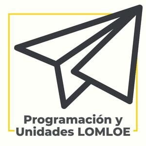

Competencia personal, social y de aprender a aprender (CPSAA)
La competencia personal, social y de aprender a aprender (también conocida por sus siglas, CPSAA) es una de las 8 competencias clave que establece la LOMLOE y que se definen en los nuevos currículos publicados en 2022.
¿Qué es la competencia personal, social y de aprender a aprender?
En realidad, tenemos 3 competencias en una, que, por su vinculación, se trabajan juntas.
La competencia personal tiene que ver con la propia persona, es decir, con el alumno. ¿Cómo gestiono mi aprendizaje? ¿Y mis emociones’ ¿Cómo me relaciono con el entorno? ¿Cómo colaboro con mis compañeros? ¿En qué medida soy capaz de avanzar? ¿O de reflexionar sobre mis resultados? ¿Cuál es mi actitud? ¿Cómo afronto los problemas? Y un largo etcétera.
Como puedes intuir, esto se relaciona con la competencia social en cuanto que nos relacionamos con compañeros y profesores. Aunque podemos aprender solos, ese no es el objetivo de la escuela. El foco está en tener una guía (el profesor) que lleve al estudiante por el camino más adecuado para un aprendizaje significativo. Y ese camino a menudo es turbulento, así que queremos aferrarnos a todas las ayudas que tengamos disponibles: los compañeros. Cuando establecemos unas normas de convivencia y respeto, debatimos, llegamos a acuerdos, escuchamos respetuosamente otros puntos de vista a la vez que compartimos el nuestro sin imponerlo,… estamos trabajando la competencia social.
La competencia aprender a aprender es la conducente al famoso aprendizaje a lo largo de la vida. Se basa en la reflexión sobre cómo y por qué aprendemos. La adquisición de esta competencia clave implica saber iniciar, gestionar y persistir en el aprendizaje. Como puedes imaginar, es importantísima para que los alumnos tengan un buen rendimiento académico.
Llevando de la mano estas tres competencias en una, como un pack, podremos desarrollar unas destrezas más complejas y útiles en los alumnos.
Qué dice el currículo LOMLOE
El currículo establece lo siguiente:
La competencia personal, social y de aprender a aprender implica la capacidad de reflexionar sobre uno mismo para autoconocerse, aceptarse y promover un crecimiento personal constante; gestionar el tiempo y la información eficazmente; colaborar con otros de forma constructiva; mantener la resiliencia; y gestionar el aprendizaje a lo largo de la vida. Incluye también la capacidad de hacer frente a la incertidumbre y a la complejidad; adaptarse a los cambios; aprender a gestionar los procesos metacognitivos; identificar conductas contrarias a la convivencia y desarrollar estrategias para abordarlas; contribuir al bienestar físico, mental y emocional propio y de las demás personas, desarrollando habilidades para cuidarse a sí mismo y a quienes lo rodean a través de la corresponsabilidad; ser capaz de llevar una vida orientada al futuro; así como expresar empatía y abordar los conflictos en un contexto integrador y de apoyo.
Real Decreto 157/2022, Anexo I
Si lo resumimos al máximo, estas son las 3 ideas con las que tienes que quedarte:
- Aprender a lo largo de toda la vida (aprender a aprender)
- Convivir pacíficamente (social)
- Autegestionarse de forma saludable (personal)

Ejemplos de la Competencia Personal, Social y de Aprender
Todo lo que dice el currículo de la CPSAA es la definición que veías en el apartado anterior. No hay ejemplos como tal de esta competencia, pero sí podemos echar un ojo a sus descriptores operativos para saber mejor de qué trata.
| Al completar la Educación Primaria, el alumno o la alumna… | Al completar la enseñanza básica, el alumno o la alumna… |
|---|---|
| CPSAA1. Es consciente de las propias emociones, ideas y comportamientos personales y emplea estrategias para gestionarlas en situaciones de tensión o conflicto, adaptándose a los cambios y armonizándolos para alcanzar sus propios objetivos. | CPSAA1. Regula y expresa sus emociones, fortaleciendo el optimismo, la resiliencia, la autoeficacia y la búsqueda de propósito y motivación hacia el aprendizaje, para gestionar los retos y cambios y armonizarlos con sus propios objetivos. |
| CPSAA2. Conoce los riesgos más relevantes y los principales activos para la salud, adopta estilos de vida saludables para su bienestar físico y mental, y detecta y busca apoyo ante situaciones violentas o discriminatorias. | CPSAA2. Comprende los riesgos para la salud relacionados con factores sociales, consolida estilos de vida saludable a nivel físico y mental, reconoce conductas contrarias a la convivencia y aplica estrategias para abordarlas. |
| CPSAA3. Reconoce y respeta las emociones y experiencias de las demás personas, participa activamente en el trabajo en grupo, asume las responsabilidades individuales asignadas y emplea estrategias cooperativas dirigidas a la consecución de objetivos compartidos. | CPSAA3. Comprende proactivamente las perspectivas y las experiencias de las demás personas y las incorpora a su aprendizaje, para participar en el trabajo en grupo, distribuyendo y aceptando tareas y responsabilidades de manera equitativa y empleando estrategias cooperativas. |
| CPSAA4. Reconoce el valor del esfuerzo y la dedicación personal para la mejora de su aprendizaje y adopta posturas críticas en procesos de reflexión guiados. | CPSAA4. Realiza autoevaluaciones sobre su proceso de aprendizaje, buscando fuentes fiables para validar, sustentar y contrastar la información y para obtener conclusiones relevantes. |
| CPSAA5. Planea objetivos a corto plazo, utiliza estrategias de aprendizaje autorregulado y participa en procesos de auto y coevaluación, reconociendo sus limitaciones y sabiendo buscar ayuda en el proceso de construcción del conocimiento. | CPSAA5. Planea objetivos a medio plazo y desarrolla procesos metacognitivos de retroalimentación para aprender de sus errores en el proceso de construcción del conocimiento. |
Cómo trabajar la Competencia Personal, Social y de Aprender a aprender en el aula
La teoría está muy bien, pero vamos a lo interesante: ¿cómo trabajo esta competencia clave en mis clases? Aquí tienes algunas ideas, atendiendo a 3 aspectos diferentes:
Motivación
Esta motivación es fruto de la curiosidad y de un rol protagonista del alumno, por lo que las metodologías activas potenciarán esta competencia LOMLOE.
Para motivar a nuestros alumnos, debemos crearles una necesidad que les empuje a la acción. Para cumplir con las características de la competencia aprender a aprender, esa acción debe colocarles en el centro del proceso de enseñanza-aprendizaje. Veamos algunos ejemplos:
- Preguntas o hipótesis como punto de partida: ¿qué pasaría si mezclamos agua y aceite? Los alumnos, que desconoces el resultado de esa pregunta, se ven empujados a actuar para descubrir qué pasa cuando mezclan agua y aceite. Con esto, 1) despertamos su curiosidad, 2) fomentamos la experimentación y 3) ellos son los protagonistas.
- Retos: se trata de realizar actividades en las que, antes de actuar, muestres a tus alumnos el resultado final al que deben llegar. Esto supone un reto para ellos con el que, explícita o implícitamente, estamos diciéndoles «a ver si eres capaz de hacer esto».
Accede a los currículos LOMLOE seleccionando tu comunidad, asignatura y curso. La aplicación te dará un archivo .docx para descargar y seguir trabajando en tu programación para terminar de perfilar la metodología y la atención a la diversidad.
Planificar, supervisar y evaluar el aprendizaje
Hemos de desarrollar los procesos mentales relacionados con el aprendizaje:
1) qué sé y qué desconozco,
2) cómo aprendo,
3) cómo afrontar las tareas.
Esto desemboca en estrategias con las que planificar el aprendizaje, supervisarlo y evaluarlo (¿te suena?).
En esta dimensión trabajamos la organización dentro del aprendizaje y, puesto que la programación didáctica es un documento donde organizamos el proceso de enseñanza-aprendizaje, hay una actividad muy sencilla que podemos hacer cada día:
- Organiza el aprendizaje de cada clase compartiendo con tus alumnos los objetivos didácticos, las actividades planificadas y el proceso de evaluación. Por ejemplo, puedes proponer el objetivo de aprender la tabla del 2. Durante la clase explicarás a tus alumnos esa tabla y realizaréis actividades. Para terminar, corregiréis esos ejercicios, viendo qué cuentas están bien, cuáles mal y por qué. Si trabajas esto todos los días, crearás un hábito en tus alumnos de manera inconsciente con el que serán capaces de planificar, supervisar y evaluar sus aprendizajes futuros.
- Estudios de caso. El alumno deberá entender y contextualizar el caso dado para, posteriormente, planificar la búsqueda de información, su gestión y redacción (CCL), y terminar autoevaluando su trabajo antes de entregarlo. Esto lo puedes fomentar entregando a tus alumnos la rúbrica con la que calificarás el trabajo. Si saben qué aspectos vas a tener en cuenta, podrán analizar su resultado final y evaluarlo para ajustarlo a lo pedido.
- Problemas. Ya sea individualmente o en grupos, plantea problemas reales que deban superar. Deberán reflexionar sobre lo que saben y lo que necesitan aprender. Según vayan avanzando en la solución, deberán supervisar el trabajo para ver si realmente su solución funciona (prueba-error). Finalmente, podrán evaluar su aprendizaje, ya sea de manera autónoma o conjunta con el grupo-clase. Eso sí, en todo momento debes guiarles y apoyarles.

Aprende a programar y deslumbra al tribunal
Descubre las claves de la LOMLOE y entiende sus elementos para elaborar una programación y unas unidades (o situaciones de aprendizaje) que enamoren al tribunal.
Trabajo cooperativo
No solo importa cómo aprendo yo, sino que también puedo aprender de cómo aprenden otros y juntos desarrollar estrategias para mejorar.
El trabajo cooperativo en grupos permite desarrollar la competencia personal, social y de aprender a aprender, pues somos conscientes de cómo aprendemos nosotros, cómo aprenden otros y cómo aprendemos juntos. Algunas actividades con las que fomentar esta dimensión son:
- Proyectos. Son el plato fuerte del proceso de enseñanza-aprendizaje, ya que ponen al alumno en el centro, lo motivan, se apoya en metodologías activas y permite desarrollar varias (incluso todas) las competencias clave a la vez. Lo bueno que tienen los proyectos es que te permiten trabajar algo que no hemos visto hasta ahora: los tiempos. Es importante que los alumnos se adapten a unos tiempos y entreguen sus trabajos en una fecha concreta. Por eso puedes plantear proyectos complejos con varias metas que los alumnos alcancen sucesivamente. Cada entrega tendrá una evaluación parcial, de manera que, una vez más, puedan supervisar su aprendizaje. Los proyectos suelen culminar con la exposición oral, el momento ideal para hacer una evaluación por pares. Aprovecha para incluir en el proyecto diferentes actividades que permitan el desarrollo de varias competencias a la vez que alcanzas objetivos y trabajan los contenidos de la(s) unidad(es). Y no permitas que dentro del grupo haya unos que trabajen mucho y otros que no hagan nada. Propón actividades individuales y grupales, en paralelo, de manera que haya actividades grupales que dependan de las individuales. Plantea también objetivos individuales, de manera que dentro de un mismo grupo, puedas premiar a los que se esfuerzan más.
- SCRUM. Con esta metodología procedente del mundo empresarial, partimos de unos requisitos planteados por el profesor (o, en su caso, el cliente). De acuerdo a esos requisitos, planteamos unos objetivos por áreas, por lo que, además, haremos grupos; cada grupo se encargará de un área. Pondremos esos objetivos en la pizarra, en la pared o en un archivo digital, donde puedan permanecer durante el tiempo que dure la actividad. A medida que vayamos avanzando, iremos marcando el grado de consecución de cada objetivo. Igual que antes, es importante marcas fechas límite para acostumbrarnos a trabajar de acuerdo a unos tiempos dados. También haremos depender unos objetivos de otros, para que haya cooperación tanto dentro de los grupos como entre los propios grupos. Una vez que tengamos todos los objetivos completos, llegaremos al resultado final y lo presentaremos. Además de la competencia aprender a aprender estamos desarrollando la comunicación lingüística, el sentido de la iniciativa, el espíritu emprendedor, la competencia social y cívica, e incluso, según como lo plantees, la competencia matemática y en ciencia y tecnología, la competencia digital y la conciencia y expresiones culturales. Es decir, todas las competencias clave, además de varios objetivos de etapa. No está mal, ¿verdad?

Características de la CPSAA
Para desarrollar plenamente la competencia personal, social y de aprender a aprender (CPSAA), necesitamos prestar atención a varios aspectos:
Utilidad del aprendizaje
El primer punto fundamental de la competencia aprender a aprender es la motivación, que, a su vez, es fruto de la curiosidad por aprender. En consecuencia, es importante que el aprendizaje sea útil. ¿Qué crees que despertará mayor curiosidad en los alumnos, estudiar las propiedades de la madera a través de fotografías en un libro o construir una maqueta con diferentes tipos de madera según las necesidades? Probablemente la segunda. Eso no quiere decir que la primera no sea válida. Pero a la hora de estudiar, debemos enseñar a los alumnos a buscar la manera más atractiva para ellos de aprender.
Párate a pensar: ¿lo que aprender tus alumnos es útil para ellos? Y más aún: ¿ellos consideran que es útil?
Debes escucharles y responder a estas preguntas desde su perspectiva, no desde la tuya. Si la respuesta es que sí, sigue por ese camino. Si la respuesta es que no, entonces debes cambiar el enfoque de tus actividades. Por ejemplo, aprender de memoria la definición de comunicación no sirve de nada. En su lugar, enseñaremos a los alumnos a comunicar eficazmente. ¿Cómo? Enseñándoles a adaptarse a la situación comunicativa, dándoles herramientas para hablar en público y diseñar discursos, practicando la comprensión lectora, mejorando la dicción, etc.
Reflexión sobre el aprendizaje
Esto nos llevará al segundo punto de esta competencia clave: la reflexión y toma de conciencia sobre el aprendizaje, propio y ajeno. Muchos alumnos saben cuáles son las horas en las que más rinden. Igualmente, pueden saber si les resulta más fácil aprender con textos, con esquemas, con dibujos o escuchando a otros. Unos tendrán más facilidad con la teoría y otros con la práctica. Y esto se debe a las inteligencias múltiples. Es importante que demos a los alumnos diferentes herramientas y estrategias de aprendizaje para que cada cual las adapte a sus características y vayan desarrollando esta competencia aprender a aprender.
Asimismo, hemos de dar a los alumnos espacio para que organicen su propio aprendizaje. Podemos, por ello, plantear actividades, individuales o en grupo, autónomas, que requieran cierta organización. De esta manera, se ponen de manifiesto las tres dimensiones del aprendizaje:
- Metacognición: el conocimiento sobre lo que se sabe y se desconoce, sobre lo que le motiva y le interesa, etc.
- El conocimiento de la materia y de los contenidos necesarios para afrontar la tarea.
- El conocimiento sobre las estrategias útiles para realizar la actividad.
En ese espacio de autonomía donde los alumnos desarrollan la competencia aprender a aprender, saben autorregular su aprendizaje buscando la motivación y utilizando estrategias ya aprendidas. Esto conlleva una mejora en la autoestima y en la concepción de su auto-eficacia. Con lo cual, resulta una competencia muy interesante pues mejora el ambiente y el rendimiento en el aula.
Convivencia
Los alumnos pasan 25-30 horas semanales en el centro educativo (a veces incluso más). En ese tiempo es normal que surjan roces y conflictos, pero ¿saben gestionarlos? En muchos casos no, o al menos no de la mejor forma. Por eso es importante trabajar la competencia social, para lograr lo que define el currículo: «colaborar con otros de forma constructiva», «identificar conductas contrarias a la convivencia y desarrollar estrategias para abordarlas», «contribuir al bienestar de los demás», «mostrar empatía» y «abordar los conflictos».
Por ejemplo, podemos crear un ambiente abierto y seguro en clase donde todos puedas expresarse libremente sin miedo a equivocarse o a sufrir menosprecio. Como docentes haremos hincapié en que todas las ideas son válidas, que equivocarse es normal y que debemos respetar todos los puntos de vista, incluso cuando no estamos de acuerdo.
Los trabajos en grupo también son una ocasión idea, ya que resultan una fuente de conflictos. ¿Qué tal si guiamos ese trabajo colaborativo? Daremos a los grupos herramientas para llegar a consensos, escuchar a todos los miembros o equilibrar el trabajo. Así, podrán trabajar con mayor productividad y menos conflictos. Y eso no significa que haya que huir de los conflictos o mirar a otra parte, sino que, cuando surjan, los gestionaremos pacíficamente.
Autoconocimiento
La mejor forma de aprender es conocerse a uno mismo. Ya que no hay dos personas iguales, tampoco hay dos formas de aprender iguales. Unos son más visuales, otros más literales, unos necesitan tomar apuntes y otros prefieren escuchar,… Si me conozco, puedo elegir qué técnicas aplicar para mejorar mi aprendizaje.
Conocerse también implica convivir mejor, porque si tengo problemas, puede que los esté volcando en los demás, generando conflictos al pensar que son otros los culpables. Puede que sienta frustración con una asignatura porque no la entiendo y vuelque esa frustración en el profesor boicoteando las clases. ¿Qué pasaría si comprendo esa frustración, descubro de dónde viene y actúo en consecuencia? Fácil: mejoraré mi aprendizaje. Y también mi estado de salud. Por eso es importante la educación emocional. ¿La incluyes en tus clases? ¿De qué manera? Déjalo en comentarios 🙂
Bonus: Webquest
En este caso proponemos una webquest para completar una actividad sobre la creación de personajes. Puede ser un trabajo individual o en grupo, en el que hay que seguir los pasos que ordenan para completar la actividad. Es decir, el propio alumno debe organizar su aprendizaje.
No es una tarea en la que aplique lo que ya sabe, sino que va a aprender haciendo. Con ello, trabajamos la competencia aprender a aprender, que es la que nos interesa ahora. Además, proponemos una actividad digital, online, con ordenadores, para mejorar la motivación y el interés.
Por otra parte, les ayudamos a reflexionar mediante preguntas o animándoles a sacar conclusiones de la actividad. Finalmente, proponemos un test de evaluación muy sencillo para probar qué han aprendido y transmitir esa sensación de utilidad del aprendizaje. Después de esta actividad, van a saber crear personajes para sus historias y analizar los de sus series y películas favoritas. Es decir, acercamos el aprendizaje a su contexto.


Ejemplo de como podemos aplicar aprender a aprender